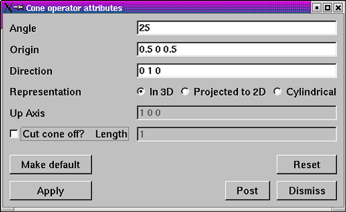

You can specify the slice cone by setting various fields in the Cone operator attributes window, shown in figure. To specify how pointy the cone should be, type a new angle (in degrees) into the Angle text field. The cone is defined relative to its origin, which is the point at the tip of the cone. To move the cone, type in a new origin vector into the Origin text field. The origin is represented by three floating point numbers separated by spaces. Once the cone is positioned, you can set its direction (where the cone points) by entering a new direction vector into the Direction text field.
|  |
| Figure 19 |